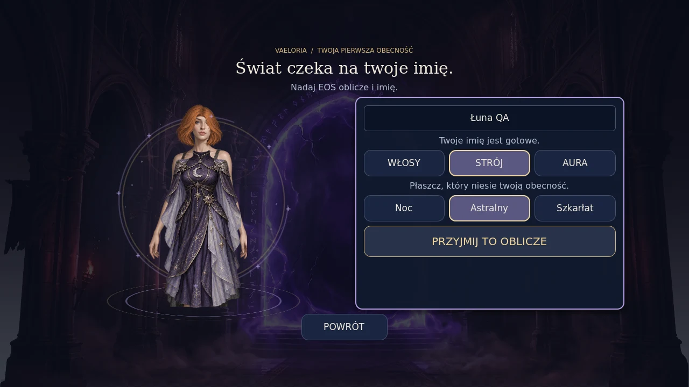
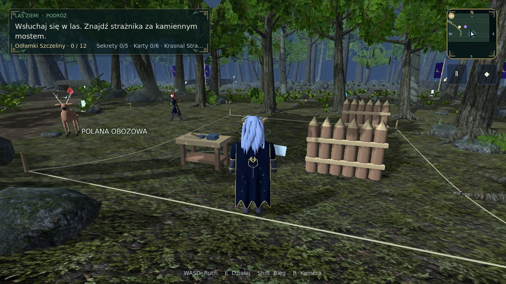
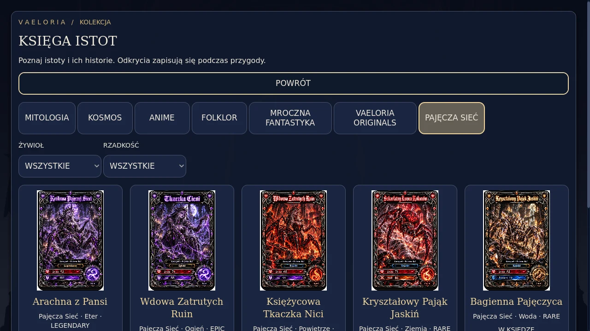
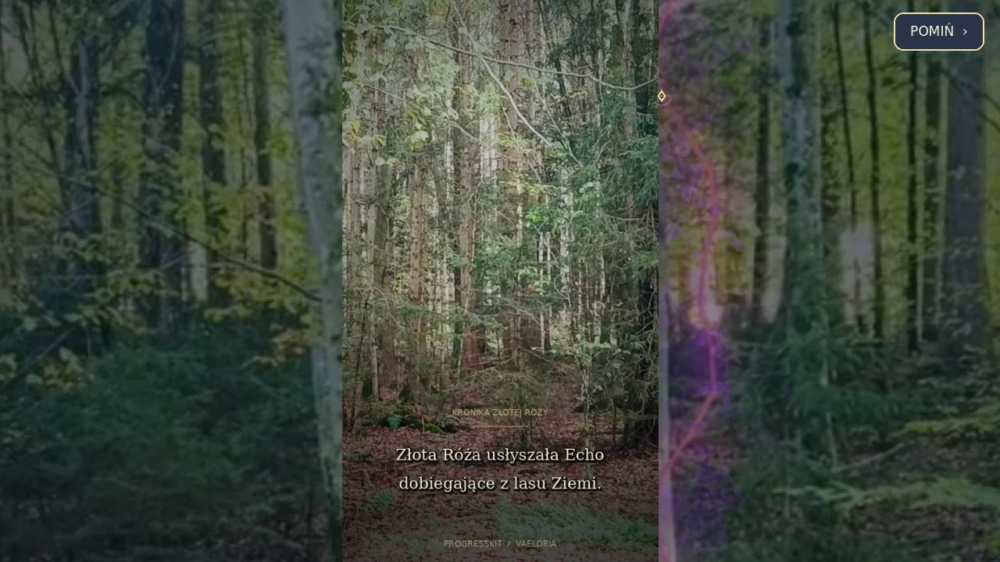
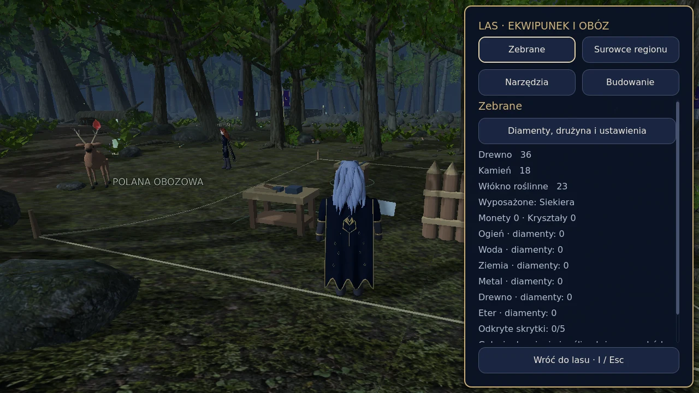
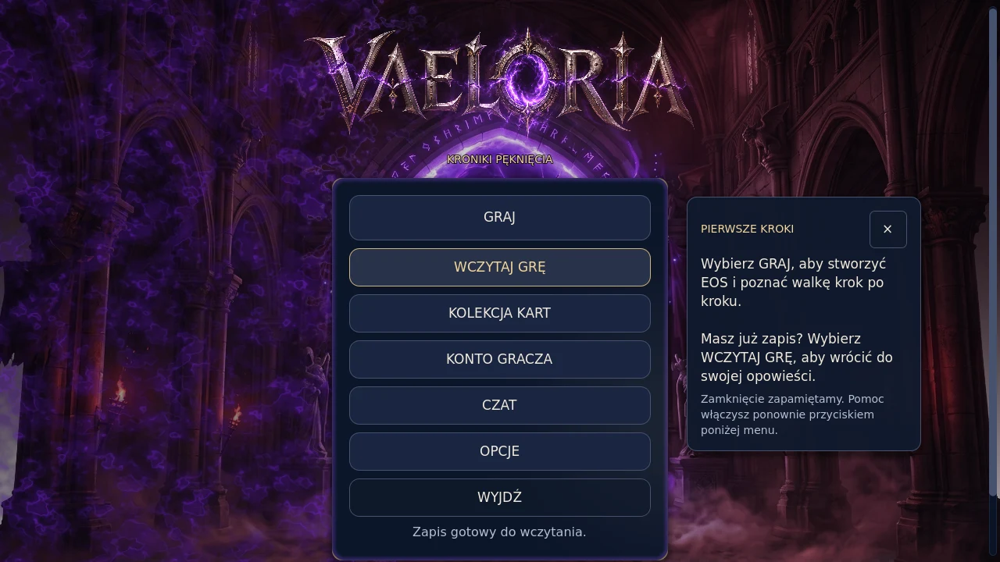
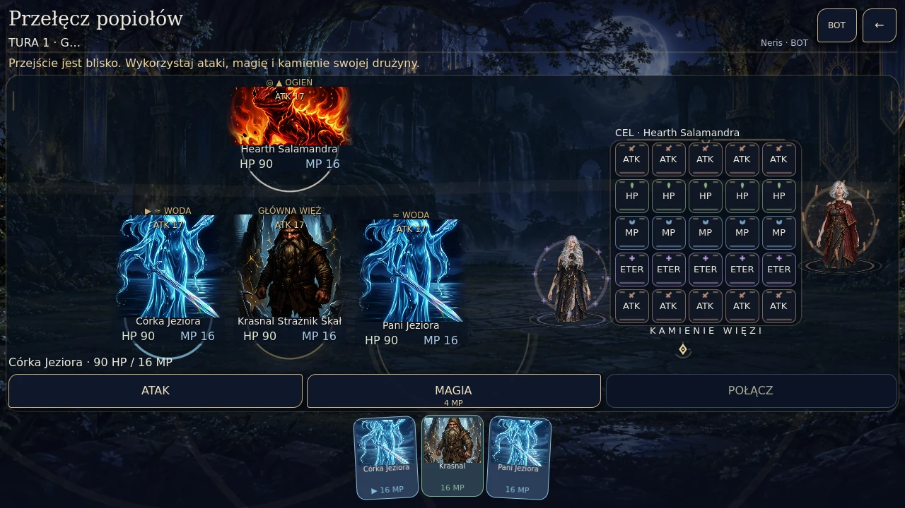

Przygoda fantasy / eksploracja i karty
Vaeloria
Twoja obecność.
Żywy świat.
Stwórz EOS. Wejdź do Lasu Ziemi. Odkrywaj więzi.
Vaeloria łączy postać EOS, eksplorację 3D, kolekcję kart i turową walkę. Najnowszy lokalny zakres rozwija trwały obóz, zbieranie, wyposażenie oraz prolog Zew Ziemi.
Karty, EOS i eksploracja Earth 3D
- EOSwłasna postać i jej wygląd
- Las Ziemieksploracja i trwały obóz
- Kartykolekcja i lokalna walka

Od pierwszego kroku
Jeden spójny przebieg.
- Stwórz EOS
- Wejdź do lasu
- Zbuduj obóz
- Odkryj kartę
Vaeloria
Zbuduj własną obecność.
Kreator pozwala wybrać imię i wygląd EOS. Menu prowadzi do gry, zapisu oraz kolekcji. Pokazujemy istniejący kreator i osobno nowszy model postaci w prawdziwym lesie; docelowa sztuka i animacje pozostają w rozwoju.

Vaeloria
Z lasu wracasz z czymś więcej.
Zbieranie, narzędzia, ekwipunek, warsztat, skrzynia i budowanie należą do istniejącego stanu rozgrywki. Obóz i wyposażenie zachowują się po ponownym wejściu. To działający lokalny zakres, z prototypową oprawą.

Vaeloria
Kolekcja prowadzi do taktyki.
Karty, kryształy i turowe komendy korzystają ze wspólnej domeny walki. Lokalni rywale oraz turnieje AI działają oddzielnie od konta i czatu. Obecność tych usług nie oznacza gotowej walki PvP.

Vaeloria
Zew Ziemi otwiera drogę.
Prolog prowadzi przez misję do prawdziwego Lasu Ziemi. Film, możliwość pominięcia i ścieżka awaryjna są zintegrowane. Materiał fabularny zachowuje status propozycji do zatwierdzenia, a nie ogłoszonego kanonu.

Bez fikcyjnego interfejsu
Rzeczywisty produkt. Z bliska.
Wybierz ekran, aby obejrzeć go w pełnym rozmiarze. Każdy materiał zachowuje opis środowiska i daty.









Nagranie aplikacji
Tak wygląda rozgrywka.
Archiwalna rzeczywista walka tutorialu z Iria BOT na Redmi. Materiał zachowuje kontekst starszego wydania; nie jest nowym odbiorem obecnego drzewa.
Pod powierzchnią
Technologia ma tu swoje zadanie.
Aplikacja i interfejs
Godot4.6.3.NET · C# / klient net9.0 · Domain/Application/Infrastructure net8.0 · GL Compatibility · Godot Shaders / MultiMesh · GDScript harnessy QA
Usługi i komunikacja
ASP.NET Core · EFCore / PostgreSQL · SignalR
Dane i zapis
JSON saveV1
Testy i oprawa
xUnit · NSIS — Windows preview
Potwierdzony zakres, źródła i ograniczenia
Opis projektu
Rozwijana gra fantasy z kartami, tworzeniem EOS, kampanią i eksploracją Earth 3D. Kod obejmuje prolog, misję wejścia do lasu oraz trwały obóz; docelowa jakość artystyczna pozostaje otwarta.
Problem i rozwiązanie
Przygodowy świat, kolekcja stworzeń i walka potrzebują wspólnego postępu oraz oprawy, która mieści się w budżecie telefonu.
Godot/C# łączy menu, karty i tworzenie EOS z kampanią, walką oraz eksploracją. Prolog prowadzi do istniejącej misji i lasu, a obóz zapisuje realne zasoby, wyposażenie i budowle.
Połączyć podróż bohatera EOS, odkrywanie świata i budowanie drużyny stworzeń w jednym doświadczeniu.
Platformy i dostępność
Linux desktop
Natywny klient Godot i środowisko deweloperskie; rzeczywiste sceny gry.
Historyczne natywne testy Godot i .NET; najnowszy 13.10 pass dotyczy konkretnych zakresów EOS/lasu/kreatora i wizualnej areny, nie pełnego nowego release gate.
Projekt i lokalne buildy; nie potwierdzano osobnego publicznego instalatora Linux.
Docelowa oprawa/animacje i długotrwały performance gate otwarte.
Android
APK arm 64,pl.progresskit.vaeloria,1.3.0-preview.3/code 6; obsługa dotyku i lokalnego zapisu.
Historyczne fizyczne OPPO12.10 obejmuje las, pojedynek i turniej; fizyczne Redmi 13.10 opisuje własny kontrolowany przebieg. Każdy wynik związany z odrębnym hashem APK.
Historycznie publiczny debug-signed preview APK14.10. Publiczny plik po sanitizacji symboli ma oddzielny status fizyczny NOT_VERIFIED.
Nie przenosić PASS starego APK na obecny kod lub publicznego kandydata. Brak wydania sklepowego i pełnego długiego testu termicznego.
Windows x64
Rzeczywisty portable folder,ZIP i NSIS installer; self-contained runtime.
Historyczna walidacja statyczna 20PASS/0FAIL/3NOT_VERIFIED. Fizyczny Windows runtime i instalacja NOT_VERIFIED; UI approval PENDING.
Historycznie udostępniony unsigned preview setup z 10.10; wcześniejszy zakres niż galeria Android.
Podpis/Smart Screen oraz rzeczywista instalacja/odinstalowanie/uruchomienie wymagają odbioru.
WWW / API
Strona produktu i pliki preview, API konta/portalu/czatu. Brak grywalnego klienta Godot w przeglądarce.
Historyczna bramka publicznej strony 14.10:186HTTP i 29Chrome. Lokalny backend ma starsze rzeczywiste testy PostgreSQL/Kestrel, a późniejsze zestawy pomijały 7 integracji bez bazy.
Strona publiczna i preview historycznie wdrożone; stan bieżący nieodświeżony w tym audycie.
Publiczny landing nie dowodzi gotowości produkcyjnej gry, API ani Pv P.
Weryfikacja z datą i środowiskiem
- PASS · 2026-11-09
Integracja prologu, misji i istniejącego lasu
Zapisane dowody produktu; ponownie odczytane podczas audytu
Raport: Debug PASS; 515 testów .NET PASS i 7 SKIP; zapisane lokalne sesje nie są fizycznym odbiorem Androida.
Źródło wyniku - PASS · 2026-10-12
Domain 192/Application 269/API2;7APIintegracji pominięto bez testowej bazy. · AI arena — .NET
Linux/Godot 4.6.3 .NET
463 PASS / 0 FAIL / 7 SKIP. 7SKIP nie jest PASS. Nie sumować z późniejszym powtórzeniem 463.
Źródło wyniku - PASS · 2026-10-12
Las→pojedynek→powrót→turniej,układy/kampania/prezentacja i część screenshot assertions. · AI arena — natywne scenariusze Godot
Linux/Godot 4.6.3 .NET
867 PASS / 0 FAIL / 0 SKIP. Liczba asercji harnessów,nie 867 odrębnych sesji gracza.
Źródło wyniku - PASS · 2026-10-12
270 meczów;156A/114B,bez remisu/limitu/nielegalnego ruchu,270 replay. · AI arena — symulator i replay
Linux/Godot 4.6.3 .NET
270 PASS / 0 FAIL / 0 SKIP. Historyczne symulacje; ponowny audyt tylko odczytał spójność danych.
Źródło wyniku - PASS · 2026-10-12
Dotyk,rozstawienie,portal,magia,wyjście,zwycięstwa,liga 8 AI/7 meczów,trwałość po restarcie. · Fizyczne OPPO — AI arena
OPPOCPH2525/Android 15;APKsha ecfae 0 f 2 b 6 ca 0 c 20 cf 86 d 4412673 b 6 b 8694 d 3 b 0 a 5 ccf 12967 c 60 f 87770799566
18 PASS / 0 FAIL / 0 SKIP. Nie Windows ani obecny publiczny APK;krótki Low 59.4FPS nie jest pełnym performance gate.
Źródło wyniku - PASS · 2026-10-12
Łupy/zapis/pojedynek 482,las 106,mosty/woda 29. · Earth Forest 2 — natywne scenariusze Godot
Linux/Godot 4.6.3 .NET
617 PASS / 0 FAIL / 0 SKIP. Oddzielny późniejszy zestaw od 867AIarena; nie sumować historycznych przebiegów.
Źródło wyniku - PASS · 2026-10-13
27Domain i 34Application:EOS/save/livingidentity/presentationplayback. · EOS3D — wybrane regresje .NET
Linux/Godot 4.6.3 .NET
61 PASS / 0 FAIL / 0 SKIP. Filtrowany zakres;nie nowy pełny test API/gry.
Źródło wyniku - PASS · 2026-10-13
EOS1254,las 106,arena visual-only 67,kreator 156,eksploracja 148,reload 9. · EOS3D — natywne regresje Godot
Linux/Godot 4.6.3 .NET
1740 PASS / 0 FAIL / 0 SKIP. Arena 67 to visual-only,nie pełny pojedynek. Performance 12 kontroli osobno,pełna bramka NOT_VERIFIED.
Źródło wyniku - PASS · 2026-10-10
PE/runtime/PCK/ZIP i rzeczywiste rozpakowanie NSIS;208 plików zgodnych. · Kandydat Windows — statyczna walidacja
Linux;statyczna kontrola eksportu Winx64
20 PASS / 0 FAIL / liczba pominięć nieustalona. 3 NOT_VERIFIED,Windows runtime/installer nieodebrane;niepodpisany preview.
Źródło wyniku - PASS · 2026-10-14
Anonimowa strona/zasoby/downloady/Range i izolacja prywatnych tras. · Publiczna strona — HTTP productiongate
Historyczne anonimowe HTTPS;bez odświeżenia 02.11
186 PASS / 0 FAIL / 0 SKIP. Nie produkcyjna jakość gry ani aktualny status hosta.
Źródło wyniku - PASS · 2026-10-14
5 szerokości,galeria,Escape/focus,reducedmotion,console/images/overflow. · Publiczna strona — Chrome
Historyczny produkcyjny Chrome
29 PASS / 0 FAIL / 0 SKIP. Nie świeży test portfolio/Godot 02.11.
Źródło wyniku - NOT RUN · 2026-11-02
Read-only kod/Git/raporty/artefakty. · Nowy gameplay/inferencja/urządzenia w audycie
Linux/Godot 4.6.3 .NET
Wynik dotyczy wyłącznie opisanego zakresu. Nie uruchamiano Godota,telefonu,Windows ani serwera.
Źródło wyniku - NOT RUN · 2026-11-02
Przegląd bieżącego zakresu implementacji i granic dostępności.
Audyt źródeł i dostępnej dokumentacji.
Odczyt źródeł nie zastępuje uruchomienia aplikacji, testów urządzeń ani potwierdzenia produkcji.
Źródło wyniku - NOT RUN · 2026-11-25
Aktualizacja inwentarza i granic gotowości
Lokalny audyt kodu, dokumentacji i istniejących artefaktów
Nie uruchamiano produktu, nowego builda ani urządzenia. Zachowane wyniki mają własną datę i zakres.
Źródło wyniku
Funkcje w katalogu
- Menu i rzeczywiste ekrany kolekcji, podglądu oraz ujawniania kart.
- Tworzenie EOS i prezentacja postaci w istniejącym modelu stanu gry.
- Kampania, drużyna, walka i statusy z rzeczywistym wpływem na stan rozgrywki.
- Intro Earth z możliwością pominięcia, kontrolą końca odtwarzania, fallbackiem i misją wejściową.
- Eksploracja Earth 3D oraz przejście do istniejącego lasu z zachowaniem zapisu.
- Obóz: zbieranie zasobów, ekwipunek, rzemiosło, budowanie, skrzynia i trwały postęp.
- Własne materiały świata i postaci oraz zapisane kadry z aktualnych scen; docelowy odbiór artystyczny pozostaje otwarty.
Architektura
- Natywny klient Godot 4.6.3 .NET/net 9.0. Osobne biblioteki Domain, Application i Infrastructure na net 8.0 oddzielają reguły walki/karty/AI od scen i renderowania. Lokalne profile oraz rywalizacja używają JSON i atomowych adapterów plikowych. Osobne API ASP.NET Core/EFCore/PostgreSQL obsługuje konto, sesje, portal i Signal R chat. Offline AI nie wymaga serwera walk; Remote Player Agent jest rozłączony, więc implementacji kont/czatu nie wolno przedstawiać jako Pv P.
Zakres weryfikacji
- Raport integracji prologu z 09.11.2026: końcowy Debug build i 515 testów .NET PASS, 7 SKIP.
- Zapisane sesje obejmują pominięcie i naturalny koniec intro, fallback, misję, las i ponowne uruchomienie z zachowaniem postępu.
- Aktualny przegląd graficzny pozostawia jakość docelową PARTIAL oraz odbiór artystyczny otwarty.
Lokalna liga potrzebuje wyników wynikających z rzeczywistych walk i możliwych do odtworzenia.
- Diagnoza
- Kod turnieju wywołuje wspólną sesję walki i sprawdza zapisane komendy.
- Przyczyna
- Historia wyników i rozgrywka muszą zachować ten sam wynik dla tych samych komend.
- Rozwiązanie
- Turniej ośmiu AI rozgrywa siedem meczów, a zapis wyniku przechodzi replay; nierozstrzygnięty mecz zatrzymuje drabinkę.
- Weryfikacja
- Raport z 12.10.2026 opisuje 270 symulacji i fizyczny turniej konkretnego APK. W audycie odczytano dane, bez nowej rozgrywki.
- Wynik
- Istnieje lokalna liga i turniej z weryfikacją wyników; nie jest to sieciowe PvP.
Źródła katalogu
- Vaeloria: źródła funkcji 01
Odczyt źródeł 02.11.2026: Kreator EOS z imieniem, fryzurą, kolorem włosów, strojem i aurą; onboarding, wybór starterów i samouczek prowadzą do rzeczywistej kampanii.
- Vaeloria: źródła funkcji 02
Odczyt źródeł 02.11.2026: Eksploracja 3D: chód/bieg, kamera ze spring arm i kolizją, sterowanie klawiaturą, myszą i dotykiem; las zawiera ścieżki, mosty i interakcje.
- Vaeloria: źródła funkcji 03
Odczyt źródeł 02.11.2026: Minimapa odkrywa sektory i znaczniki, zapisuje postęp oraz rozróżnia zebrane obiekty. Skrytki i diamenty aktualizują rzeczywistą kolekcję i zasoby po udanym zapisie.
- Vaeloria: źródła funkcji 04
Odczyt źródeł 02.11.2026: Turowy Combat Engine rozstrzyga ataki, zdolności, MP, obrażenia, relacje żywiołów i statusy oraz odrzuca akcje niezgodne z aktywną turą.
- Vaeloria: źródła funkcji 05
Odczyt źródeł 02.11.2026: Dziesięciu lokalnych rywali ma własne tożsamości EOS, drużyny i trudności. Sześć strategii to Aggressive, Defensive, Balanced, Control, Support i Elemental Specialist; wagi wpływają na wybory, nie dodają ukrytych bonusów statystyk.
- Vaeloria: źródła funkcji 06
Odczyt źródeł 02.11.2026: Human i AI przekazują wersjonowane komendy do tej samej sesji pojedynku. Obserwacja AI zawiera własną rękę i ujawnione przywołania przeciwnika; Remote jest obecnie odłączonym adapterem.
- Vaeloria: źródła funkcji 07
Odczyt źródeł 02.11.2026: Lokalna liga liczy punkty z faktycznych wyników; turniej wymaga ośmiu różnych AI i rozgrywa siedmiomeczową drabinkę. Replay komend weryfikuje wynik; remis lub limit jawnie zatrzymuje drabinkę.
- Vaeloria: źródła funkcji 08
Odczyt źródeł 02.11.2026: Iria, Sylvara i Veyron wędrują po trzech autorskich trasach lasu, zatrzymują się blisko gracza i udostępniają wejście do lokalnego pojedynku. Oddalone rigi są usypiane; brak symulowania walk w tle eksploracji.
- Vaeloria: źródła funkcji 09
Odczyt źródeł 02.11.2026: Arena jest sceną 3D z przeciwnymi EOS i Portalem Więzi. Przywołania, efekty zdolności i reakcje odczytują stan silnika; prezentacja nie uruchamia ponownie reguł walki.
- Vaeloria: źródła funkcji 10
Odczyt źródeł 02.11.2026: Plansza ma 25 kryształów w układzie 5×5. Gracz wybiera łańcuch, a domena sprawdza sąsiedztwo i dozwolone efekty; soczewki kryształów są wspólnym widokiem kampanii i pojedynków.
- Vaeloria: źródła funkcji 11
Odczyt źródeł 02.11.2026: Profil JSONV1, checkpointy i nagrody zapisują się atomowo z kopią poprzedniego zapisu; ukończone węzły i rejestry łupów chronią przed powtórnym odbiorem. Zapis nie jest snapshotem trwającej walki.
- Vaeloria: źródła funkcji 12
Odczyt źródeł 02.11.2026: Zaimplementowano API rejestracji/logowania, rotację sesji i refresh, wylogowanie oraz klienta konta. Jest to odrębny system od zapisu i gry offline.
- Vaeloria: źródła funkcji 13
Odczyt źródeł 02.11.2026: Czat globalny wykorzystuje Signal R i PostgreSQL, historię, zgłoszenia wiadomości oraz blokowanie użytkowników; nie jest dowodem sieciowej rozgrywki Pv P.
- Vaeloria: źródła funkcji 14
Odczyt źródeł 02.11.2026: Profile Low/Medium/High ograniczają koszt prezentacji, a Reduce Motion redukuje ruch ambientów. Efekty lasu stosują Multi Mesh, odległość i frustum zamiast osobnej ciężkiej sceny dla minimapy.
- Vaeloria: przegląd zakresu 02.11.2026
Odczyt kodu, dokumentacji i zapisanych dowodów. Nie jest nowym testem produktu ani wdrożenia.
- Vaeloria: historyczny raport weryfikacji 01
Domain 192/Application 269/API2;7APIintegracji pominięto bez testowej bazy.
- Vaeloria: historyczny raport weryfikacji 02
Las→pojedynek→powrót→turniej,układy/kampania/prezentacja i część screenshot assertions.
- Vaeloria: historyczny raport weryfikacji 03
270 meczów;156A/114B,bez remisu/limitu/nielegalnego ruchu,270 replay.
- Vaeloria: historyczny raport weryfikacji 04
Dotyk,rozstawienie,portal,magia,wyjście,zwycięstwa,liga 8 AI/7 meczów,trwałość po restarcie.
- Vaeloria: historyczny raport weryfikacji 05
Łupy/zapis/pojedynek 482,las 106,mosty/woda 29.
- Vaeloria: historyczny raport weryfikacji 06
27Domain i 34Application:EOS/save/livingidentity/presentationplayback.
- Vaeloria: historyczny raport weryfikacji 07
EOS1254,las 106,arena visual-only 67,kreator 156,eksploracja 148,reload 9.
- Vaeloria: historyczny raport weryfikacji 08
PE/runtime/PCK/ZIP i rzeczywiste rozpakowanie NSIS;208 plików zgodnych.
- Vaeloria: historyczny raport weryfikacji 09
Anonimowa strona/zasoby/downloady/Range i izolacja prywatnych tras.
- Vaeloria: historyczny raport weryfikacji 10
5 szerokości,galeria,Escape/focus,reducedmotion,console/images/overflow.
- Vaeloria: kontrola weryfikacji 11
Read-only kod/Git/raporty/artefakty.
- Vaeloria: analiza implementacji 01
Studium implementacji na podstawie kodu i wskazanych raportów; ograniczenia uruchomienia są jawne.
- Vaeloria — audyt ekosystemu 25.11.2026
Sceny menu, kart, tworzenia EOS i EarthStoryProlog; ForestCampService i aktualny przegląd graficzny PARTIAL. Odczyt źródeł i zapisanych dowodów; bez nowego builda lub testu produktu.
Aktualny stan / 2026-11-25
Vaeloria
Projekt jest w rozwoju. Rendery obozu pochodzą z 08.11, prologu z 09.11.2026; menu, kreator i kolekcja ze wcześniejszych sprintów. Nie przedstawiamy ich jako świeżych testów fizycznego Androida ani gotowej finalnej oprawy.
Udokumentowane lokalne i historycznie publiczne preview Android/Windows; APKdebug/Windows unsigned. Bez deklaracji sklepowego wydania ani finalnego odbioru platform.
Co pozostaje do ukończenia
- Docelowy model, materiały i animacja EOS wymagają dalszego odbioru artystycznego.
- Najnowszy prolog i obóz nie mają końcowego potwierdzenia na fizycznym Androidzie.
- Materiały narracyjne pozostają robocze do zatwierdzenia kanonu; testy funkcjonalne nie są akceptacją grafiki.